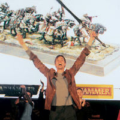

Warhammero
 De: La Frikipedia, la enciclopedia extremadamente seria.
De: La Frikipedia, la enciclopedia extremadamente seria.

|
La información contenida en este artículo es una mínima parte de su jugo total, así que ponte los guantes, saca el tupperwere y empieza a exprimir el tema. Si lo haces serás recompensado con una galleta en almíbar y algo más.
|
| De la serie tribus urbanas del mundo:
|
| Warhammero
|
Ejemplo de la tribu

|
| Warhammero
|
|
| Hábitat
|
Donde haya Warhammer
|
| Inteligencia
|
Mucha, es friki
|
| Frase favorita
|
Warhameeeer
|
| ¿Peligroso?
|
En el tablero de juego
|
| Obsesión
|
Warhammer
|
| Notas
|
Muyy friki...
|
Dícese del friki que se dedica a gastar cantitades ingentes de pasta gansa en unas miniaturas llamadas Warhammer, alimentando así a los gorrones que venden los warhammer, la secta satánico-chunga-estafadora conocida como Games Workshop (pagadme 1€, que os he hecho propaganda).
Características
Luego de provocar que Games Workshop (otro €, so gorrones) nade en ríos de oro, los warhammeros se dedican a montarlos, rindiéndose a los 5 minutos, debido a la dificultad para pegar las piezas pequeñas (tras unos 50 intentos consiguen pegar el jodío brazo). Después de pegar el muñequito, encima hay que pintarlo, por lo cual estos frikis le echan la capa base de negro y, pinceles en mano, lo pintan como buenamente pueden, con técnicas como: lavado de tinta, pincel seco, pincel mojao, pintar normal, lavado con detergente, pintar con una pipa, meterse el muñequito por el culo, pintarlo con caspa... etc... Una vez hecho esto se dedican a jugar con las miniaturas en rituales pseudo-satánicos llamados 'batallas', las cuales están subdivididas en 6 rituales menores llamados 'turnos'. Cada turno consta de 4 fases: En la fase de movimiento se dedican a mover los muñecos por la mesa, midiendo rigurosamente los centímetros, ya que un fallo echaría el ritual al traste(que pierdes, vamos). Luego hacen la fase de magia, en la que como te salga doble seis eres la hostia, pero como te salga doble uno la cagas. Después, en la fase de disparo, tiras los dados pa ver si los inútiles de tus muñecos matan algo (cosa rara). Y al fin llega el combate cuerpo a cuerpo... sangre, muertes, cobardes huyendo arrasados, porno (bueno, esto solo las elfas brujas)... claro está que hay que echarle imaginación porque los muñecos están ahí como estatuas (bueno, son estatuas en miniatura) Tras la batalla, el perdedor se va a su casa, y el ganador también...
Hábitat natural
Los warhammeros suelen reunirse alrededor de las mesas de juego, en antros conocidos como 'piso', donde se quedan horas jugando alrededor de la mesa, en la GW(ya no pongo el nombre entero por no pagarme el €), donde compran miniaturas compulsivamente, o en su casa, donde pintan como putas. En general, en cualquier sitio donde haya Warhammer.
Costumbres
- Jugar a los Warhammer
- Pintar Warhammer
- Comprar Warhammer
- Discutir sobre lo careros que son los de GW
- Discutir sobre que ejército es mejor
- Fumarse Warhammer(se habla de uno que se metió 3 warhammer a la vez en la boca y unos 20 por culo, orejas..etc... para fumarlos, pero lo normal es cojerlos de uno en uno(eso sí, después de pintarlos)
- Rascarse la cabeza(con Warhammer)
- Ir al Games Day, el D.O.S....
- Escribir artículos como este
- Y en definitiva...¡Warhammer!
Guerrero del Caos confesando su condición sexual
Amigos
- Otros Warhammeros
- Sus Warhammer
- Otros tipos de friki
- jebis
- Conversos( a cualquiera de las especies arriba nombradas)
- El dependiente de la GW
Enemigos
- canis
- pijos
- Los precios altos
- Su hermano/a pequeño/a que les destroza los warhammer
- Los tacaños de sus padres( si viven con ellos)
Descripción detallada de cada una de las razas del mundillo este del Warhammer
tranelos. El 99,9% se disfrazan de tía (y luego dicen que por qué no crece la natalidad...¬¬), este es el motivo por el que casi todos los tíos que han intentado follarse a una elfa después de verla (porque las elfas sulen estar cañón) han recibido un tiburonazo en la diana(más conocida como
tranelo afecta al cerebro al final). Están peleandose siempre con los Elfos oscuros, porque los elfos oscuros queieren que los altos elfos sean machos, y los altos elfos quieren llevar a los oscuros al psiquiatra, pero ellos se niegan, dicen que eso de bañarse en sangre es normal... El origen de todo esto fue que unos altos elfos pirómanos achicharraron a un tal Malekith, líder de Nagarithe( ya sabes, la tercera esquina a la derecha, luego turces en la segunda calle a la izquierda, sigues pa´lante y en la rotonda giras a la izquierda, cuarta salida), los elfos que estaban por allí no lo toleraron, y se convirtieron en elfos oscuros, negándose a ser tranelos, pero, a cambio, se convirtieron en putas sadomasoquistas. El 99,9% de los jugadores altos elfos son
gays descaraos (el que escribe este articulo es ese 0,1% que no es bujarra).
Don Zipote de la Mancha, pero vestíos con mariconadas. Tienen los caballeros del grial, que son unos particularmente pedos(ya veis que en el mundo de warhammer hay droga hasta debajo de las piedras) que le hacen caso al espíritu de una tía buena en pelotas que la tapan con cuatro trapos llamada ``Dama del lago´´ y que dicen que es una graan hechicera. El rey se llama Louen Lencoeur, que en castellano viene a ser ``el que se lía porros subío en un grifo´´. También está el caballero verde que le hace caso a la puta en bolas que nos hemos referido anteriormente y lidera a los caballeros del grial(si habeís leído el Código Da Vinci, por cierto, que me de 1€ el autor por la propaganda, sabreís que el grial viene a ser la mata de pelos de la entrepierna llamada...)Antes de la batalla, los caballeros le rezan a la Dama Putonafumamucho del Lago, y se forma un humo extraño en el campo de batalla... Los que no son caballero son campesinos muertos de hambre que le roban hasta a su puta madre pa comer algo, en definitiva, el que juega con esto o se cree que el póster del taller de la esquina es la zorra del lago en bolas(por cierto, se divierte matando gente) y le da al póster o es más pobre que los campesinos, o un poco de todo...
Fumar te deja en los huesos...
* Reyes Funerarios: Pues estos chavalotes son los típicos que no les hacian caso a su madre cuando les decía eso de comerse las lentejas y así quedaron... en los huesos, además recordemos que el tabaco deja en los huesos, y el tabaco aquí abunda... Al parecer murieron por sobredosis y fueron reanimados por el Gran Camello Nagash, el cual después fue derrotado por Settra, el Rey Fumedario.(sí, fumedario, porque el tio jinca que es pa verlo) Bueno, resulta que el Settra este tiene cámaras de tesoros con el mejor jachís del mundo(a excepción del jachís silvano) y los esqueletos fumaos defienden su jachís frente a los camellos de otras razas que lo roban porque son pobres y no tienen pa comprarlo. Los reyes fuenerarios (o fumedarios) tienen un tesoro buscado por los camellos mejor que su jachís: sus legendarias llamas de los templos del fumamiento, las mejores del mundo para encender los petas, mientras haya porros (siempre), habrá camellos a los que los fumaos esqueleticos matarán cuendo les roben los mecheros.
Autor(es):
- Krusher
- Alex2610
- Roms
- Jjepg
- Harry El del Pote
- Generibot
Frikipedia 2005-2016, Licencia
GFDL 1.2 - Extraído por FrikiLeaks